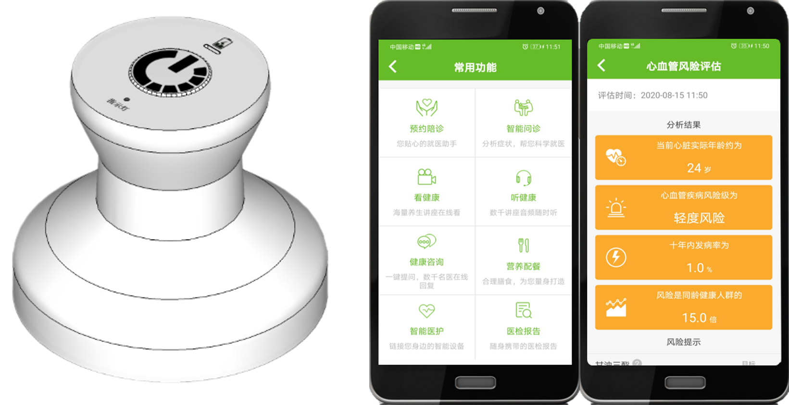
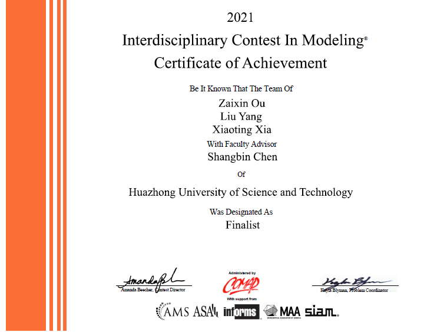
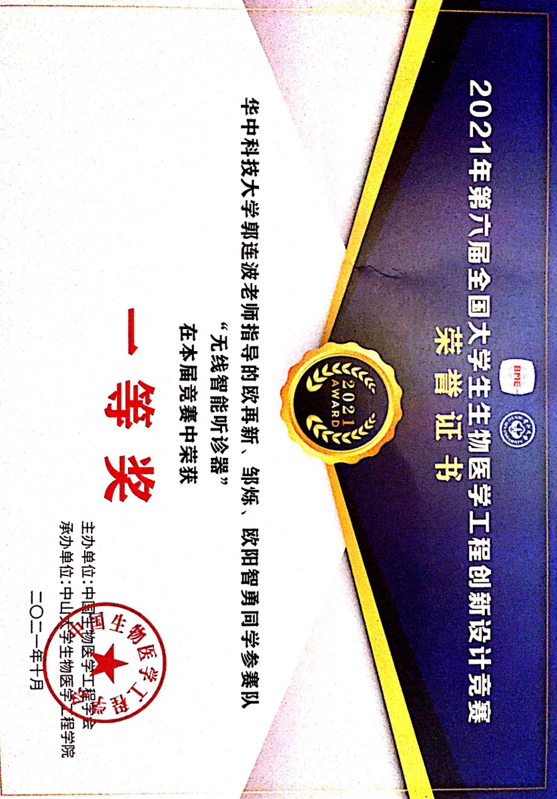
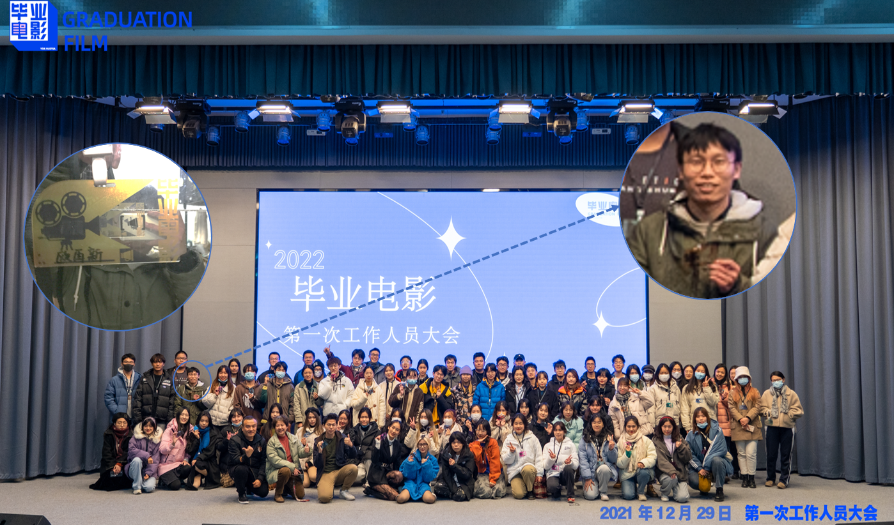

Zaixin Ou
I am a senior student at HUST, Wuhan, where I work on deep learning, medical imaging process, and AI medical, etc. During the university, I did my reaserch on computer aided diagnosis of AD at school of SES, HUST.
Research Interest
I am interested in the field of computer-aided diagnosis of diseases, and I tend to apply deep learning in image post-processing, especially in medical image classification and recognition.
Research
Under the guidance of Professor Luo Haiming, I wrote a literature review on computer-aided diagnosis of Alzheimer's disease (AD). I focused on the fusion of MRI and PET images to classify AD and MRI. In addition, I also summarized the application of a combination of biomarkers (such as cerebrospinal fluid) or physiological data (such as the MMSE scale) and medical images in the early diagnosis of AD.
Projects
Below, I will list two of my projests to show my engineering ability and modeling ability.
Handheld cloud medical assistant
We developed a wireless auscultation hardware device based on piezoelectric sensors. Cooperated with APP for multi-source sound signal analysis, it can provide prediction results of selected diseases, health assessment and suggestions. It is envisaged that the APP will embed an online consultation platform and personal health file management to realize telemedicine and play the role of medical big data. One thing to add is that this project did not achieve the expected results, which encourages us to continue.
American College Student Mathematical Modeling Contest
In order to measure the distribution fairness of the food system, a new two-dimensional distribution fairness plane model based on the comprehensive distribution entropy and fairness is designed. Aiming at the complexity of the actual food distribution system, an innovative concept of comprehensive distribution entropy is proposed to show the active level and regional aggregation of the food transportation process.
National Undergraduate Biomedical Engineering Innovation Design Competition
During this contest, I was the leader of the team, creatively introducing the multi-source physiological sound signal to our system. Meanwhile, our team also use the method of deep learning to process the acquired data, and use the features learned by the model to classify the chosen disease.
Graduation Film of HUST in 2022
In filming, I acted as an assistant of director, assisting in interviewing roles and negotiating shooting tasks. In addition, I also participated in the script creation as a screenwriter assistant.
Book
This book contains my short stories and poems during the two years from 2019 to 2021. Though some articles now may be viewed over emotional, I just couldn't delete them. Since in my eyes, they are equally precious to those viewed wonderful.
Anyway, this book is priceless to me and I will keep it by my side to remind myself to keep writing and recording the world from my own vision.
Back to the book, in my early year, I prefer to write poems. The biggest reason is that writing a poem can save the time cause I was much busier in the early days. However, after the busy days, when I really have more free time, I can no longer write poetry. It is interesting and comfusing. Then, I came to find the reason. After a few days of deliberation, I eventually found why in the early but busy days I could write out the poem.
The reason is obvious. In the early time, I wrote poems only when I truly have something to write down. But now, since the life is so barren, it's not easy to find something I am really touched.
So I turn my attention to short stories, and I enjoyed the fiction world and characters in my writing. It seems that I am talking to the one who is totally made by myself but I still cann't figure its whole look out.
At the end, I'd appretiate if you are motivated by the words above and click the link to view the whole book. I wish you could enjoy it.
03/2019-09/2021, "View the Book" or want more in github.
Services
1. Movie of graduate year of 2022, director assitant & screenwriter assitant
2. 2020-2021, Student Assistant, Student Affairs Office, HUST
3. 2020, Office Assistant, SES
4. 2021, Director Department, V-fun
Awards
1. 2019, Undergraduate Excellent Students, HUST
2. 2019, Merit student, HUST
3. 2021, Finalist Award, American College Students Mathematical Contest in Modeling
4. 2020, The Third Prize, China "Internet +" University Student Innovation and Entrepreneurship Competition, Hubei province
5. 2020, The third prize, Excellent Student Innovation Annual Conference, HUST
6. 2018, Freshman Scholarship, HUST
More
1. Amount of reading: 704 books, till 31/12/2021
2. Amount of movie: 1260 movies, till 31/12/2021